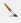

It is accessible through:
Layer Explorer > Right Click over a Layer-name > Style Explorer
View > Style Explorer
The
explorer style has three distinct components:


Properties:
Properties:


The only parameters for a Local Image is:

- Style Explorer: Uses a tree structure (style, rule and symbolizer) to represent the hierarchy of the style associated with the layer. The tree structure is shown bellow with examples of styles for polygon, line and point:
- Style: It is the top level and represents the layer style. A style can have more than one rule, each one can represent a restriction over the data. The default behavior is one rule per layer without restrictions.
- Rule: A rule is composed by a set of symbolizers defined in the next tree level. The default rule has no restriction and includes all data.
-  It is only a shortcut to the Draw Tool in the application and draw the layer using the defined style.
 It add a new symbol to the rule. Initially, the symbol
added is a clone of the selected symbol (default). To change
the properties that define its symbology go to Symbology component.
It add a new symbol to the rule. Initially, the symbol
added is a clone of the selected symbol (default). To change
the properties that define its symbology go to Symbology component.
 It removes the selected symbol from the rule.
It removes the selected symbol from the rule.
- and changes the order of the symbol in the rule.
- It is used to change the scale of the symbols used to compose the rule and displays at preview. It will not take effect on the Map Display.
-
It is used to open a library manager from where is it possible to
seach and pick up the symbol.
- Symbology: This component allows the user to modify the symbol, accessing all properties belonging to the selected symbols. The details may vary depending on the feature being represented. The feature types and their properties are listed bellow and the links leads to the Symbolizers session:
- Polygons:
- Lines:
- Basic Symbology (only stroke)
- Points:
- Raster:
Symbolizers
A
Symbolizer is an abstract type for encoding the graphical properties
used to portray geographic information. A Symbolizer
describes how a feature will appear on a map. The Symbolizer describes
not just the shape that should appear but also such graphical
properties as color and opacity. A Symbolizer is obtained by specifying
one of a small number of different types of Symbolizers and then
supplying parameters to override its default behaviour.
Basic Symbology
Basic Fill
A Fill specifies the pattern for filling an area geometry.Properties:
- Color: Sets the color used to draw the fill.
- Opacity: Sets the opacity to draw the fill.
Basic Stroke
A Stroke specifies the appearance of a linear geometry.Properties:
- Color: Sets the color for the contour drawing.
- Opacity: Sets the opacity for the contour drawing.
- Width: Sets the width for the contour drawing.
- Dash: Sets the dash for contour drawing.
- Join: This property defines how a line should be joined (between line segments).
- Cap: This property defines how a line should be capped (at the two ends of the line).
Graphic Symbology
A Graphic is a graphic symbol with an inherent shape, color(s), and possibly size. A graphic can be defined very informally as "a little picture" and can be either a raster or vector-graphic source type.Graphic Properties
The basic parameters of a graphic symbology are:- Size: Sets the size for the graphic drawing. If a size is specified, the height of the graphic will be scaled to that size and the corresponding aspect will be used for the width.
- Angle: Sets the angle for the graphic drawing. It gives the rotation of a graphic in the clockwise direction about its center point in decimal degrees, encoded as a floating-point number. Negative values mean counter-clockwise rotation.
- Opacity: Sets the opacity for the graphic drawing.
Well Known Mark
A WellKnown Mark are geometric shapes used to represent a feature in a map. Available shapes include at least circle,
square, cross, triangle, star and x, although map servers may
draw a different symbol instead if they don't have a shape for
all of these.
The basic parameters of a Well Known Mark are:

The basic parameters of a Well Known Mark are:
- Type: Defines the Well Known Mark type (circle, square, cross, triangle, star, x among others)
Glyph Mark
The
alternative to the Well Known Marks is an external mark format.
The Glyph Mark allows to use a TrueType font file and select
an individual glyph from that file.
The basic parameters of a Glyph Mark are:

The basic parameters of a Glyph Mark are:
- Font: Defines the True Type font to be used.
- Char: Defines a specific character in the font selected.
Local Image
Another type of mark that can be defined is the image files (png files). To define it click on the valueThe only parameters for a Local Image is:
- Image:
Displays a dialog box that allows you to choose a local file containing
an image. Click on the value and then on the
 .
.
Raster Symbology
A
Raster Symbology is used to specify the rendering of
raster/matrix-coverage data (e.g., satellite images, DEMs).
The basic parameters of a Raster Symbology are:
The basic parameters of a Raster Symbology are:
- Opacity: Sets the opacity to draw the raster.
- Enhancement: Allows to apply enhancements over the image so that the changes are applied equally on all bands.
- Brightness: Lets you adjust the brightness of the image.
- Sharpness: Lets you adjust the sharpness of the image.
- Channel Selection: The Channel Selection property specifies the false-color channel selection for a multispectral raster source (such as a multi-band satellite-imagery source).
- Mono: Defines a band to be displayed on the gray channel.
- Red: Defines a band to be displayed on the red channel.
- Green: Defines a band to be displayed on the green channel.
- Blue: Defines a band to be displayed on the blue channel.
- Composition: Allows selection of three bands to do the color composition on red, green and blue channels.
- Contrast Enhancement: Improves the contrast of each individual channel image.
Example
In this example three vector data were used and its three respective styles(rules) where defined by the Style Explorer:- Polygons: Brazil.
- Lines: Highway of Brazil.
- Points: Capitals of Brazil.